Boss 跪地失衡時在他身邊按攻擊：騎士衝上前、壓低身體、躍起，雙手把劍反握舉過頭，從上面把劍插進 Boss 的胸口／肩頸，掛在劍上往下壓、把劍轉兩次（每轉一次 Boss 抽一下、傷口噴火星），然後一腳蹬在他身上把劍拔出來往後跳，蹲著落地、站起來。整段 3 秒，傷害在劍插進去的那一刻（0.8 秒）。Boss 的反應用之前核准的「被處決」那幾個姿勢，只是拉長、對齊新的時間。
| 時間 | 騎士 | Boss |
|---|---|---|
| 0–0.4 秒 | 衝上前、壓低蓄勢 | 跪著喘 |
| 0.4–0.8 秒 | 躍起，劍舉過頭、劍尖朝下 | 抬頭看他 |
| 0.8 秒 | 插下去：停頓、白光、震動、扣血 | 被刺中往後仰、頭往上甩 |
| 0.8–2.0 秒 | 掛在劍上，1.25 秒、1.7 秒各轉一次劍 | 每轉一次抽一下 |
| 2.0–2.5 秒 | 一腳蹬開、拔劍往後跳 | 往前垂 |
| 2.5–3.0 秒 | 蹲著落地、站起來 | 慢慢回到跪姿，接著起身 |
遊戲裡錄的（2 倍，含停頓；新的場景）
從正面
最常見的角度：騎士背對我們，掛在 Boss 胸口。劍被他自己的身體擋住，看得到轉劍時傷口噴的火星、Boss 往後仰。
從側面（Boss 面向騎士）
劍看得最清楚：一道亮的劍身從騎士的雙拳斜插進 Boss 的胸口。
從另一側
從背後
騎士在 Boss 背後：躍上去時從他頭上露出來，落地後被擋住，照之前的規則畫成藍色剪影。
從側面，但 Boss 面向下方
這時劍插在 Boss 的肩膀上。
處決把 Boss 打死
扣血照舊在插下去那一刻，但 Boss 等騎士蹬開、落地（3 秒）之後才倒下：騎士還掛在他身上時先倒會穿幫。這是規則上新加的一點，請看。
處決把 HP 打到一半以下
處決完直接接第二階段的轉場（和以前一樣），場景跟著變暗變紅。
和 Boss 一起看（照遊戲的時間，2 倍）
從正面
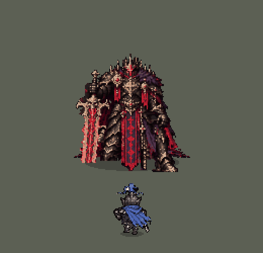
從側面
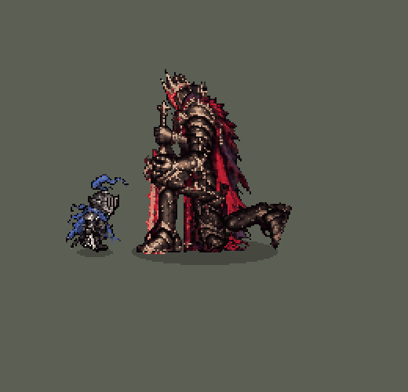
從背後（剪影）
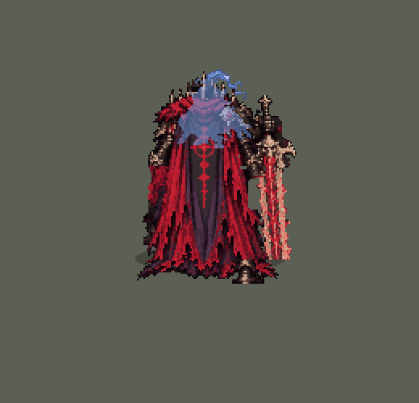
Boss 面向下方：刺在肩上
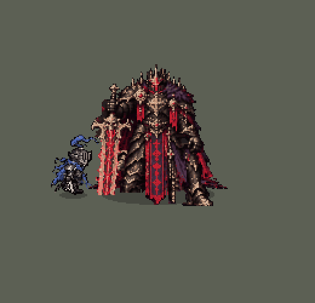
重點那幾格（正面）
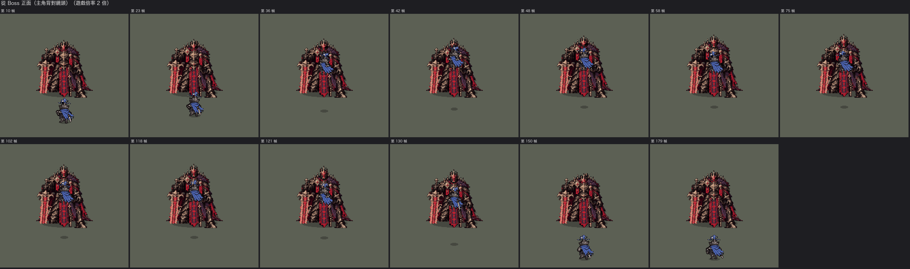
重點那幾格（側面）
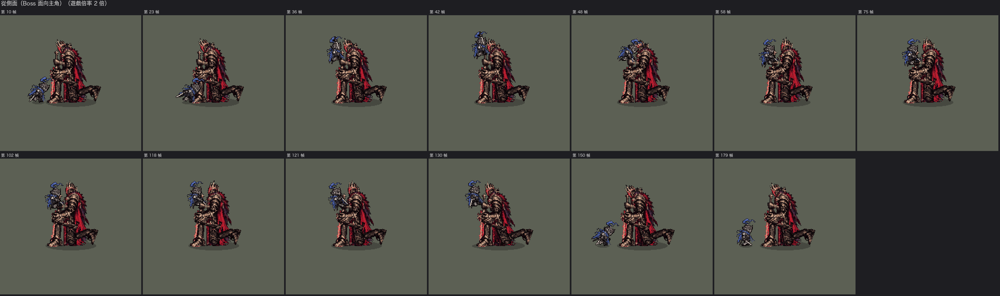
騎士本身：四個方向
四個方向並排
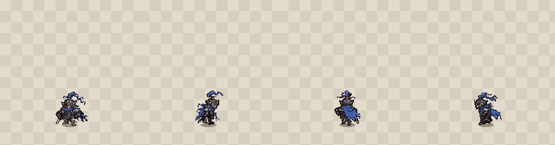
地面格子照遊戲移動騎士的方式捲動（往 Boss 衝、躍上去、往回跳）；陰影留在地上、越高越小。
朝下
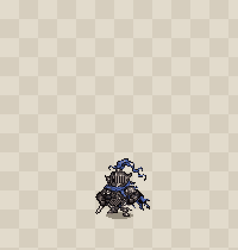
朝右
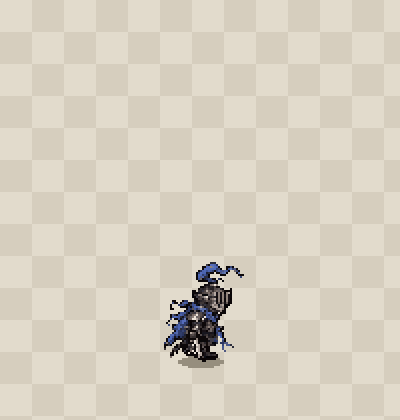
朝上
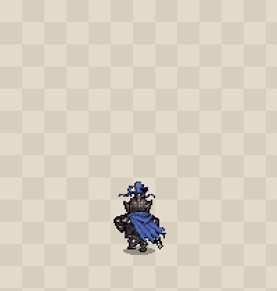
朝左（不是朝右的鏡像）
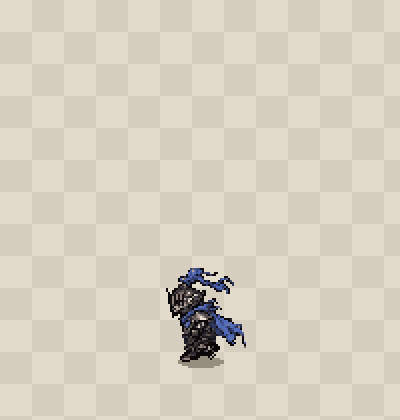
逐張（6 倍）
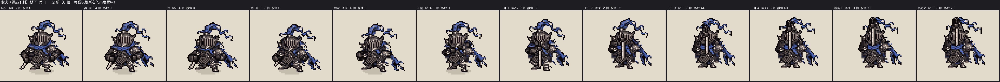
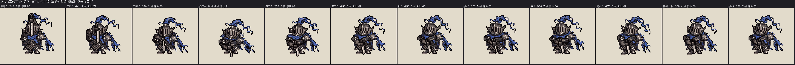
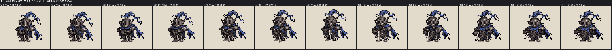
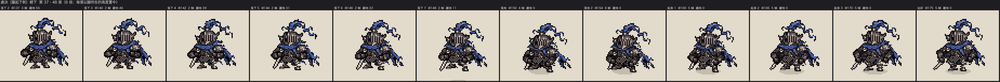
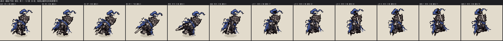
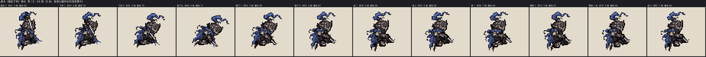
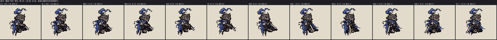
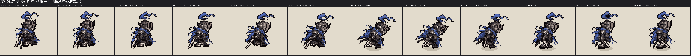
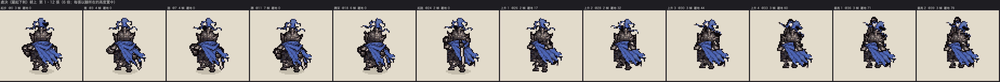
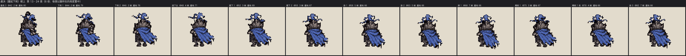
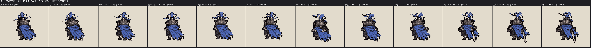
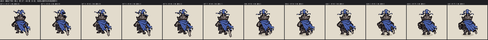
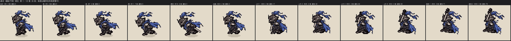
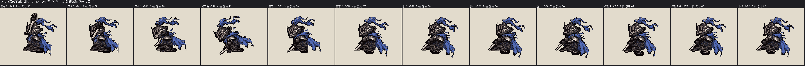
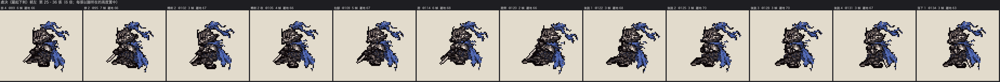
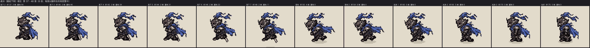
檢查用的圖
握劍的雙手和劍（四方向並排）
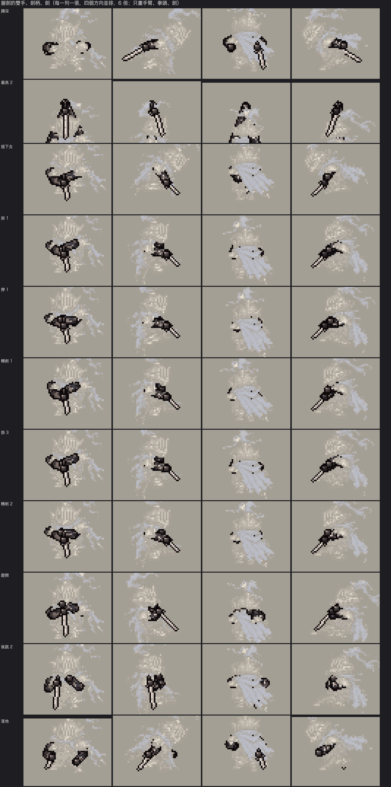
腿單獨畫出來（朝右）
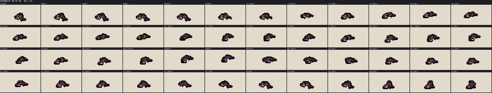
腿（朝左）
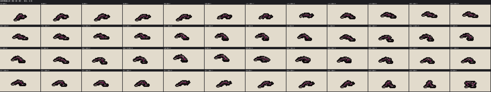
腿（朝下）
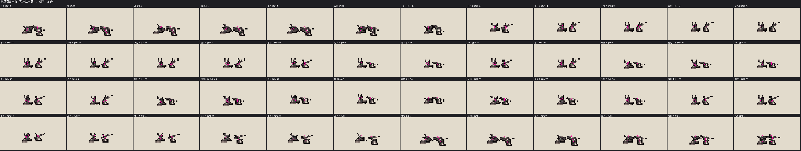
腿（朝上）
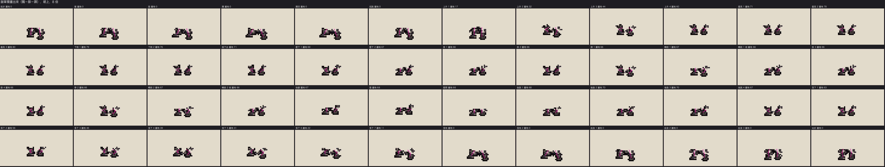
頸部以上
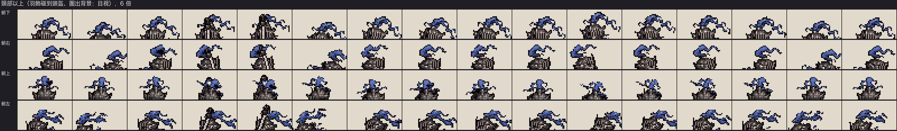
和設計圖的動作小圖並排（同比例，6 倍；交件後補的）
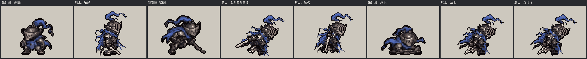
設計圖的「跳躍」「蹲下」整個人壓得很低、縮成一團；我做的起跳前和落地只是上身往前傾，腿幾乎是直的，蹲得比設計圖淺很多。這是交件後重讀審查標準時才發現的，還沒改。